TELCO Customer Churn
Kristina Frazier & Lauren Manturi
December 4, 2024
1 Descriptive Analysis
This section is an initial data analysis of all variables as an early assessment of fit for predictive modeling.
1.1 Summary Statistics
library(tidyverse)
library(car)
library(klaR)
library(lmtest)
library(car)
library(ROCR)
library(MASS)
library(tree)
library(randomForest)churn <- read_csv('WA_Fn-UseC_-Telco-Customer-Churn.csv')
# look at NA values - might be able to compute regression model to impute those values
glimpse(churn)## Rows: 7,043
## Columns: 21
## $ customerID <chr> "7590-VHVEG", "5575-GNVDE", "3668-QPYBK", "7795-CFOCW…
## $ gender <chr> "Female", "Male", "Male", "Male", "Female", "Female",…
## $ SeniorCitizen <dbl> 0, 0, 0, 0, 0, 0, 0, 0, 0, 0, 0, 0, 0, 0, 0, 0, 0, 0,…
## $ Partner <chr> "Yes", "No", "No", "No", "No", "No", "No", "No", "Yes…
## $ Dependents <chr> "No", "No", "No", "No", "No", "No", "Yes", "No", "No"…
## $ tenure <dbl> 1, 34, 2, 45, 2, 8, 22, 10, 28, 62, 13, 16, 58, 49, 2…
## $ PhoneService <chr> "No", "Yes", "Yes", "No", "Yes", "Yes", "Yes", "No", …
## $ MultipleLines <chr> "No phone service", "No", "No", "No phone service", "…
## $ InternetService <chr> "DSL", "DSL", "DSL", "DSL", "Fiber optic", "Fiber opt…
## $ OnlineSecurity <chr> "No", "Yes", "Yes", "Yes", "No", "No", "No", "Yes", "…
## $ OnlineBackup <chr> "Yes", "No", "Yes", "No", "No", "No", "Yes", "No", "N…
## $ DeviceProtection <chr> "No", "Yes", "No", "Yes", "No", "Yes", "No", "No", "Y…
## $ TechSupport <chr> "No", "No", "No", "Yes", "No", "No", "No", "No", "Yes…
## $ StreamingTV <chr> "No", "No", "No", "No", "No", "Yes", "Yes", "No", "Ye…
## $ StreamingMovies <chr> "No", "No", "No", "No", "No", "Yes", "No", "No", "Yes…
## $ Contract <chr> "Month-to-month", "One year", "Month-to-month", "One …
## $ PaperlessBilling <chr> "Yes", "No", "Yes", "No", "Yes", "Yes", "Yes", "No", …
## $ PaymentMethod <chr> "Electronic check", "Mailed check", "Mailed check", "…
## $ MonthlyCharges <dbl> 29.85, 56.95, 53.85, 42.30, 70.70, 99.65, 89.10, 29.7…
## $ TotalCharges <dbl> 29.85, 1889.50, 108.15, 1840.75, 151.65, 820.50, 1949…
## $ Churn <chr> "No", "No", "Yes", "No", "Yes", "Yes", "No", "No", "Y…# Removes 21 observations
churn <- na.omit(churn)
glimpse(churn)## Rows: 7,032
## Columns: 21
## $ customerID <chr> "7590-VHVEG", "5575-GNVDE", "3668-QPYBK", "7795-CFOCW…
## $ gender <chr> "Female", "Male", "Male", "Male", "Female", "Female",…
## $ SeniorCitizen <dbl> 0, 0, 0, 0, 0, 0, 0, 0, 0, 0, 0, 0, 0, 0, 0, 0, 0, 0,…
## $ Partner <chr> "Yes", "No", "No", "No", "No", "No", "No", "No", "Yes…
## $ Dependents <chr> "No", "No", "No", "No", "No", "No", "Yes", "No", "No"…
## $ tenure <dbl> 1, 34, 2, 45, 2, 8, 22, 10, 28, 62, 13, 16, 58, 49, 2…
## $ PhoneService <chr> "No", "Yes", "Yes", "No", "Yes", "Yes", "Yes", "No", …
## $ MultipleLines <chr> "No phone service", "No", "No", "No phone service", "…
## $ InternetService <chr> "DSL", "DSL", "DSL", "DSL", "Fiber optic", "Fiber opt…
## $ OnlineSecurity <chr> "No", "Yes", "Yes", "Yes", "No", "No", "No", "Yes", "…
## $ OnlineBackup <chr> "Yes", "No", "Yes", "No", "No", "No", "Yes", "No", "N…
## $ DeviceProtection <chr> "No", "Yes", "No", "Yes", "No", "Yes", "No", "No", "Y…
## $ TechSupport <chr> "No", "No", "No", "Yes", "No", "No", "No", "No", "Yes…
## $ StreamingTV <chr> "No", "No", "No", "No", "No", "Yes", "Yes", "No", "Ye…
## $ StreamingMovies <chr> "No", "No", "No", "No", "No", "Yes", "No", "No", "Yes…
## $ Contract <chr> "Month-to-month", "One year", "Month-to-month", "One …
## $ PaperlessBilling <chr> "Yes", "No", "Yes", "No", "Yes", "Yes", "Yes", "No", …
## $ PaymentMethod <chr> "Electronic check", "Mailed check", "Mailed check", "…
## $ MonthlyCharges <dbl> 29.85, 56.95, 53.85, 42.30, 70.70, 99.65, 89.10, 29.7…
## $ TotalCharges <dbl> 29.85, 1889.50, 108.15, 1840.75, 151.65, 820.50, 1949…
## $ Churn <chr> "No", "No", "Yes", "No", "Yes", "Yes", "No", "No", "Y…summary(churn)## customerID gender SeniorCitizen Partner
## Length:7032 Length:7032 Min. :0.0000 Length:7032
## Class :character Class :character 1st Qu.:0.0000 Class :character
## Mode :character Mode :character Median :0.0000 Mode :character
## Mean :0.1624
## 3rd Qu.:0.0000
## Max. :1.0000
## Dependents tenure PhoneService MultipleLines
## Length:7032 Min. : 1.00 Length:7032 Length:7032
## Class :character 1st Qu.: 9.00 Class :character Class :character
## Mode :character Median :29.00 Mode :character Mode :character
## Mean :32.42
## 3rd Qu.:55.00
## Max. :72.00
## InternetService OnlineSecurity OnlineBackup DeviceProtection
## Length:7032 Length:7032 Length:7032 Length:7032
## Class :character Class :character Class :character Class :character
## Mode :character Mode :character Mode :character Mode :character
##
##
##
## TechSupport StreamingTV StreamingMovies Contract
## Length:7032 Length:7032 Length:7032 Length:7032
## Class :character Class :character Class :character Class :character
## Mode :character Mode :character Mode :character Mode :character
##
##
##
## PaperlessBilling PaymentMethod MonthlyCharges TotalCharges
## Length:7032 Length:7032 Min. : 18.25 Min. : 18.8
## Class :character Class :character 1st Qu.: 35.59 1st Qu.: 401.4
## Mode :character Mode :character Median : 70.35 Median :1397.5
## Mean : 64.80 Mean :2283.3
## 3rd Qu.: 89.86 3rd Qu.:3794.7
## Max. :118.75 Max. :8684.8
## Churn
## Length:7032
## Class :character
## Mode :character
##
##
## 1.2 Outcome Variable
table(churn$Churn)##
## No Yes
## 5163 1869There are many more observations for customers who did not churn, which may make any model biased towards predicting no churn.
1.3 Character Variables
# Select character variables
names(churn)[map_lgl(churn, is.character)]## [1] "customerID" "gender" "Partner" "Dependents"
## [5] "PhoneService" "MultipleLines" "InternetService" "OnlineSecurity"
## [9] "OnlineBackup" "DeviceProtection" "TechSupport" "StreamingTV"
## [13] "StreamingMovies" "Contract" "PaperlessBilling" "PaymentMethod"
## [17] "Churn"# create a vector of character variables
char_vars <- c("gender","Partner","Dependents","PhoneService","MultipleLines","InternetService","OnlineSecurity","OnlineBackup","DeviceProtection","TechSupport","StreamingTV","StreamingMovies","Contract","PaperlessBilling","PaymentMethod")1.3.1 Category Counts
This section checks to see if there are any categories with very few observations for each of the categorical variables.
for (var in char_vars) {
print(var)
print(table(churn[[var]]))
}## [1] "gender"
##
## Female Male
## 3483 3549
## [1] "Partner"
##
## No Yes
## 3639 3393
## [1] "Dependents"
##
## No Yes
## 4933 2099
## [1] "PhoneService"
##
## No Yes
## 680 6352
## [1] "MultipleLines"
##
## No No phone service Yes
## 3385 680 2967
## [1] "InternetService"
##
## DSL Fiber optic No
## 2416 3096 1520
## [1] "OnlineSecurity"
##
## No No internet service Yes
## 3497 1520 2015
## [1] "OnlineBackup"
##
## No No internet service Yes
## 3087 1520 2425
## [1] "DeviceProtection"
##
## No No internet service Yes
## 3094 1520 2418
## [1] "TechSupport"
##
## No No internet service Yes
## 3472 1520 2040
## [1] "StreamingTV"
##
## No No internet service Yes
## 2809 1520 2703
## [1] "StreamingMovies"
##
## No No internet service Yes
## 2781 1520 2731
## [1] "Contract"
##
## Month-to-month One year Two year
## 3875 1472 1685
## [1] "PaperlessBilling"
##
## No Yes
## 2864 4168
## [1] "PaymentMethod"
##
## Bank transfer (automatic) Credit card (automatic) Electronic check
## 1542 1521 2365
## Mailed check
## 1604While there are some variables that have an imbalance of counts for each category, for the most part, every categorical variable has enough observations with in each category.
1.3.2 Chi Square Test Bar Plots
table(churn$gender,churn$Churn)##
## No Yes
## Female 2544 939
## Male 2619 930chisq.test(table(churn$gender,churn$Churn)) ##
## Pearson's Chi-squared test with Yates' continuity correction
##
## data: table(churn$gender, churn$Churn)
## X-squared = 0.47545, df = 1, p-value = 0.4905ggplot(churn, aes(x = factor(gender), fill = factor(Churn))) +
geom_bar(position = "fill") +
labs(title = "Churn Rate by Gender", x = "Gender", y = "Proportion")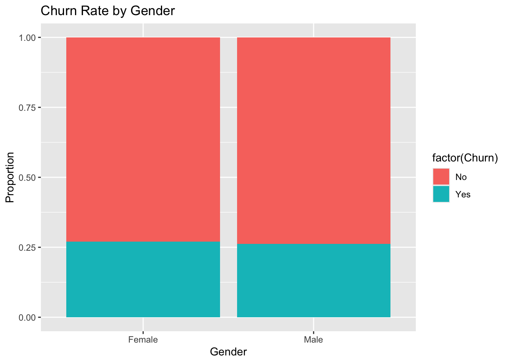
table(churn$SeniorCitizen,churn$Churn)##
## No Yes
## 0 4497 1393
## 1 666 476chisq.test(table(churn$SeniorCitizen,churn$Churn)) ##
## Pearson's Chi-squared test with Yates' continuity correction
##
## data: table(churn$SeniorCitizen, churn$Churn)
## X-squared = 158.44, df = 1, p-value < 2.2e-16ggplot(churn, aes(x = factor(SeniorCitizen), fill = factor(Churn))) +
geom_bar(position = "fill") +
labs(title = "Churn Rate by SeniorCitizen Status", x = "SeniorCitizen", y = "Proportion")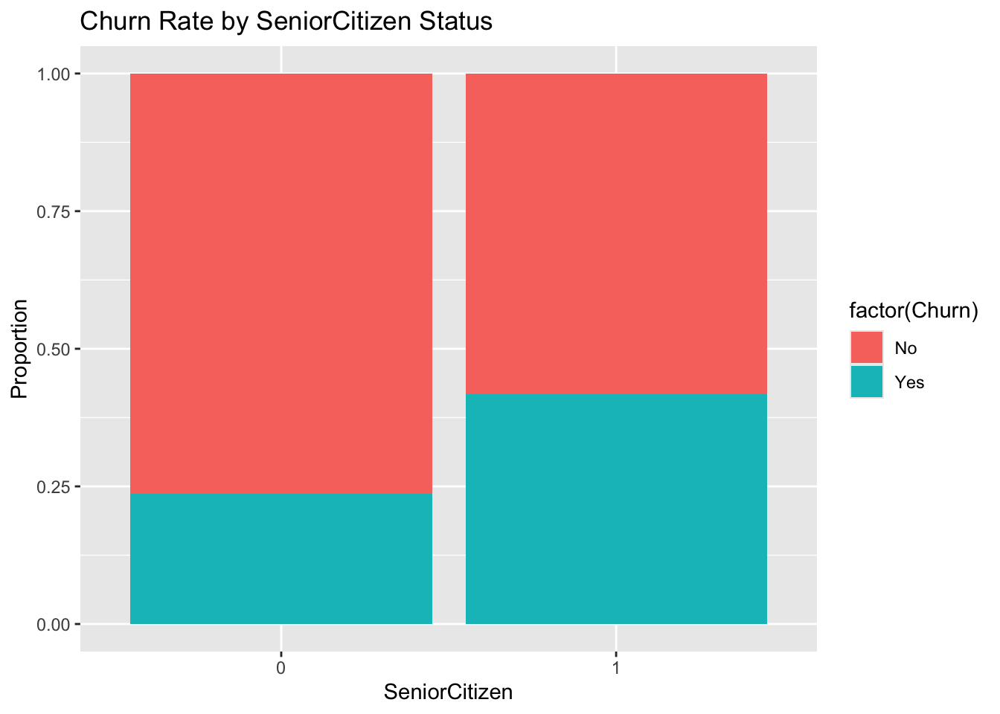
table(churn$Partner,churn$Churn)##
## No Yes
## No 2439 1200
## Yes 2724 669chisq.test(table(churn$Partner,churn$Churn))##
## Pearson's Chi-squared test with Yates' continuity correction
##
## data: table(churn$Partner, churn$Churn)
## X-squared = 157.5, df = 1, p-value < 2.2e-16ggplot(churn, aes(x = factor(Partner), fill = factor(Churn))) +
geom_bar(position = "fill") +
labs(title = "Churn Rate by Partner Status", x = "Partner", y = "Proportion")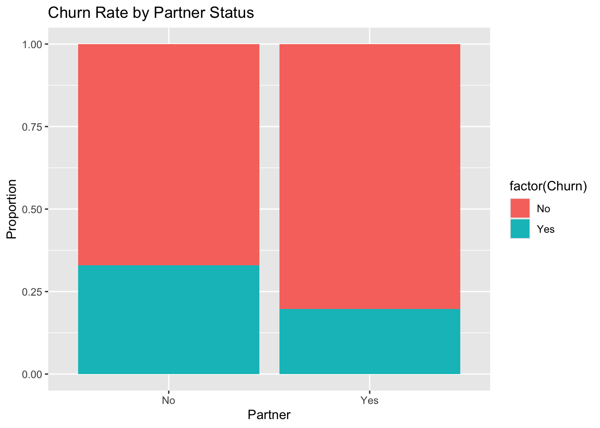
table(churn$Dependents,churn$Churn)##
## No Yes
## No 3390 1543
## Yes 1773 326chisq.test(table(churn$Dependents,churn$Churn)) ##
## Pearson's Chi-squared test with Yates' continuity correction
##
## data: table(churn$Dependents, churn$Churn)
## X-squared = 186.32, df = 1, p-value < 2.2e-16ggplot(churn, aes(x = factor(Dependents), fill = factor(Churn))) +
geom_bar(position = "fill") +
labs(title = "Churn Rate by Dependents", x = "Dependents", y = "Proportion")
table(churn$PhoneService,churn$Churn)##
## No Yes
## No 510 170
## Yes 4653 1699chisq.test(table(churn$PhoneService,churn$Churn))##
## Pearson's Chi-squared test with Yates' continuity correction
##
## data: table(churn$PhoneService, churn$Churn)
## X-squared = 0.87373, df = 1, p-value = 0.3499ggplot(churn, aes(x = factor(PhoneService), fill = factor(Churn))) +
geom_bar(position = "fill") +
labs(title = "Churn Rate by PhoneService", x = "PhoneService", y = "Proportion")
table(churn$MultipleLines,churn$Churn)##
## No Yes
## No 2536 849
## No phone service 510 170
## Yes 2117 850chisq.test(table(churn$MultipleLines,churn$Churn)) ##
## Pearson's Chi-squared test
##
## data: table(churn$MultipleLines, churn$Churn)
## X-squared = 11.272, df = 2, p-value = 0.003568ggplot(churn, aes(x = factor(MultipleLines), fill = factor(Churn))) +
geom_bar(position = "fill") +
labs(title = "Churn Rate by MultipleLines", x = "MultipleLines", y = "Proportion")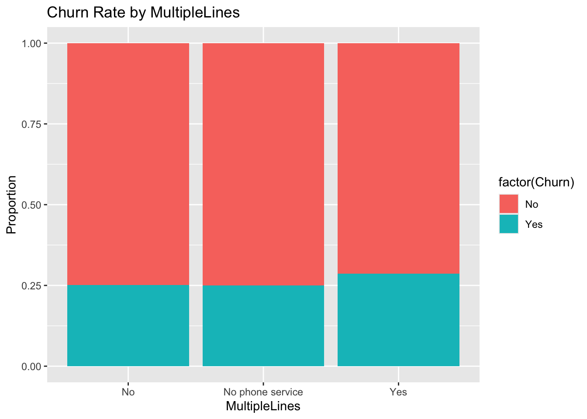
table(churn$InternetService,churn$Churn)##
## No Yes
## DSL 1957 459
## Fiber optic 1799 1297
## No 1407 113chisq.test(table(churn$InternetService,churn$Churn)) ##
## Pearson's Chi-squared test
##
## data: table(churn$InternetService, churn$Churn)
## X-squared = 728.7, df = 2, p-value < 2.2e-16ggplot(churn, aes(x = factor(InternetService), fill = factor(Churn))) +
geom_bar(position = "fill") +
labs(title = "Churn Rate by InternetService", x = "InternetService", y = "Proportion") 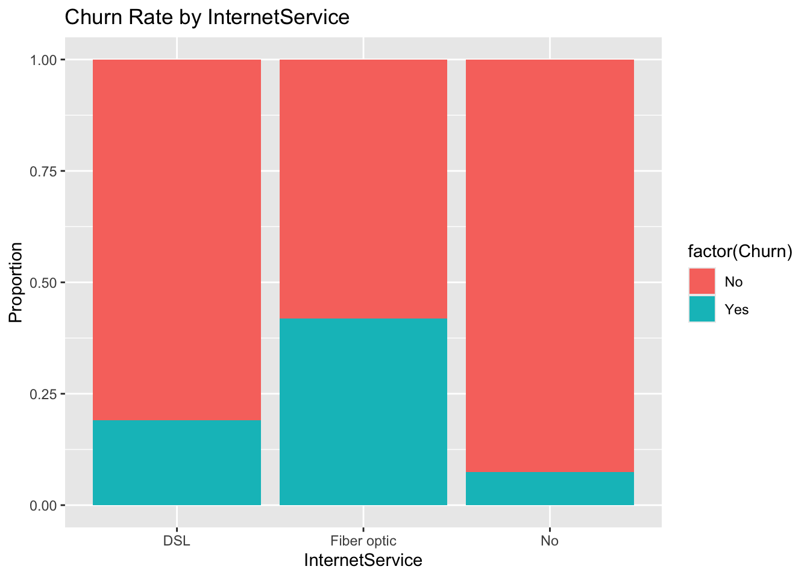
table(churn$OnlineSecurity,churn$Churn)##
## No Yes
## No 2036 1461
## No internet service 1407 113
## Yes 1720 295chisq.test(table(churn$OnlineSecurity,churn$Churn)) ##
## Pearson's Chi-squared test
##
## data: table(churn$OnlineSecurity, churn$Churn)
## X-squared = 846.68, df = 2, p-value < 2.2e-16ggplot(churn, aes(x = factor(OnlineSecurity), fill = factor(Churn))) +
geom_bar(position = "fill") +
labs(title = "Churn Rate by OnlineSecurity", x = "OnlineSecurity", y = "Proportion") 
table(churn$OnlineBackup,churn$Churn)##
## No Yes
## No 1854 1233
## No internet service 1407 113
## Yes 1902 523chisq.test(table(churn$OnlineBackup,churn$Churn))##
## Pearson's Chi-squared test
##
## data: table(churn$OnlineBackup, churn$Churn)
## X-squared = 599.18, df = 2, p-value < 2.2e-16ggplot(churn, aes(x = factor(OnlineBackup), fill = factor(Churn))) +
geom_bar(position = "fill") +
labs(title = "Churn Rate by OnlineBackup", x = "OnlineBackup", y = "Proportion")
table(churn$DeviceProtection,churn$Churn)##
## No Yes
## No 1883 1211
## No internet service 1407 113
## Yes 1873 545chisq.test(table(churn$DeviceProtection,churn$Churn))##
## Pearson's Chi-squared test
##
## data: table(churn$DeviceProtection, churn$Churn)
## X-squared = 555.88, df = 2, p-value < 2.2e-16ggplot(churn, aes(x = factor(DeviceProtection), fill = factor(Churn))) +
geom_bar(position = "fill") +
labs(title = "Churn Rate by DeviceProtection", x = "DeviceProtection", y = "Proportion") 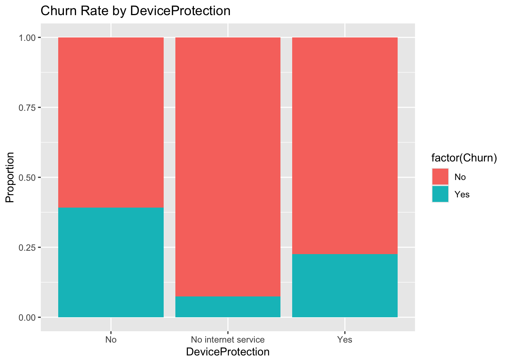
table(churn$TechSupport,churn$Churn)##
## No Yes
## No 2026 1446
## No internet service 1407 113
## Yes 1730 310chisq.test(table(churn$TechSupport,churn$Churn))##
## Pearson's Chi-squared test
##
## data: table(churn$TechSupport, churn$Churn)
## X-squared = 824.93, df = 2, p-value < 2.2e-16ggplot(churn, aes(x = factor(TechSupport), fill = factor(Churn))) +
geom_bar(position = "fill") +
labs(title = "Churn Rate by TechSupport", x = "TechSupport", y = "Proportion") 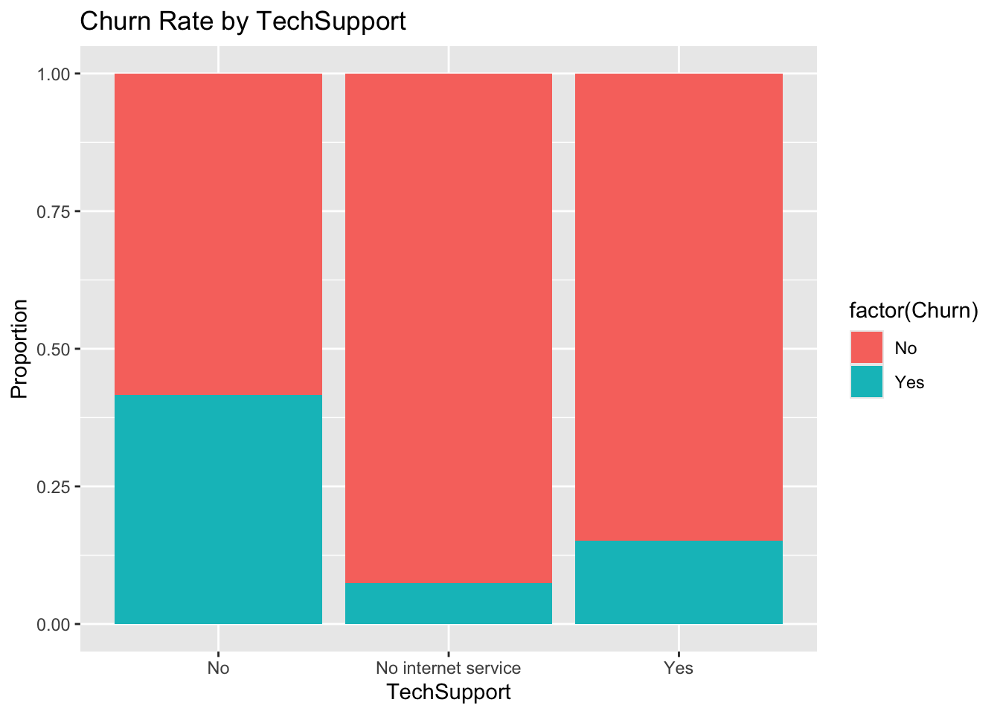
table(churn$StreamingTV,churn$Churn)##
## No Yes
## No 1867 942
## No internet service 1407 113
## Yes 1889 814chisq.test(table(churn$StreamingTV,churn$Churn))##
## Pearson's Chi-squared test
##
## data: table(churn$StreamingTV, churn$Churn)
## X-squared = 372.46, df = 2, p-value < 2.2e-16ggplot(churn, aes(x = factor(StreamingTV), fill = factor(Churn))) +
geom_bar(position = "fill") +
labs(title = "Churn Rate by StreamingTV", x = "StreamingTV", y = "Proportion") 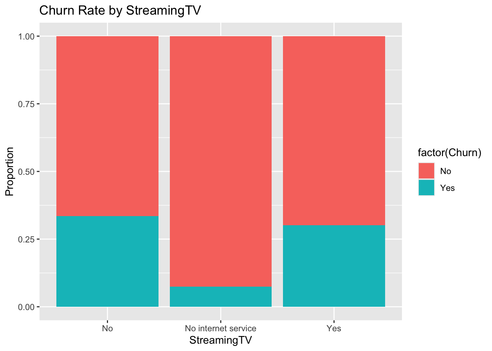
table(churn$StreamingMovies,churn$Churn)##
## No Yes
## No 1843 938
## No internet service 1407 113
## Yes 1913 818chisq.test(table(churn$StreamingMovies,churn$Churn))##
## Pearson's Chi-squared test
##
## data: table(churn$StreamingMovies, churn$Churn)
## X-squared = 374.27, df = 2, p-value < 2.2e-16ggplot(churn, aes(x = factor(StreamingMovies), fill = factor(Churn))) +
geom_bar(position = "fill") +
labs(title = "Churn Rate by StreamingMovies", x = "StreamingMovies", y = "Proportion") 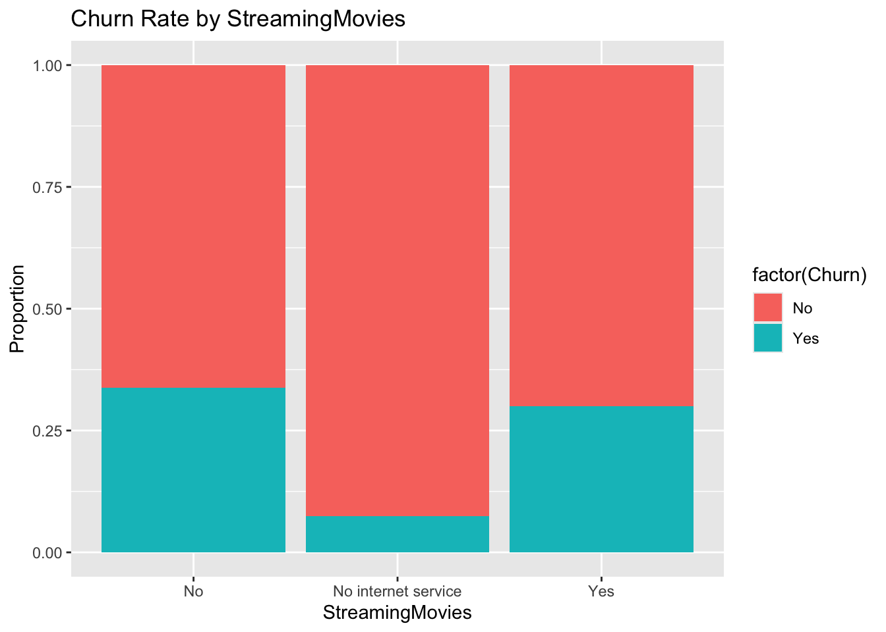
table(churn$Contract,churn$Churn)##
## No Yes
## Month-to-month 2220 1655
## One year 1306 166
## Two year 1637 48chisq.test(table(churn$Contract,churn$Churn))##
## Pearson's Chi-squared test
##
## data: table(churn$Contract, churn$Churn)
## X-squared = 1179.5, df = 2, p-value < 2.2e-16ggplot(churn, aes(x = factor(Contract), fill = factor(Churn))) +
geom_bar(position = "fill") +
labs(title = "Churn Rate by Contract", x = "Contract", y = "Proportion") 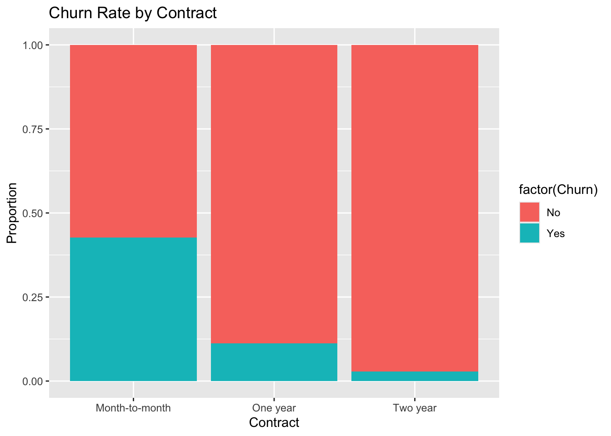
table(churn$PaperlessBilling,churn$Churn)##
## No Yes
## No 2395 469
## Yes 2768 1400chisq.test(table(churn$PaperlessBilling,churn$Churn))##
## Pearson's Chi-squared test with Yates' continuity correction
##
## data: table(churn$PaperlessBilling, churn$Churn)
## X-squared = 256.87, df = 1, p-value < 2.2e-16ggplot(churn, aes(x = factor(PaperlessBilling), fill = factor(Churn))) +
geom_bar(position = "fill") +
labs(title = "Churn Rate by PaperlessBilling", x = "PaperlessBilling", y = "Proportion") 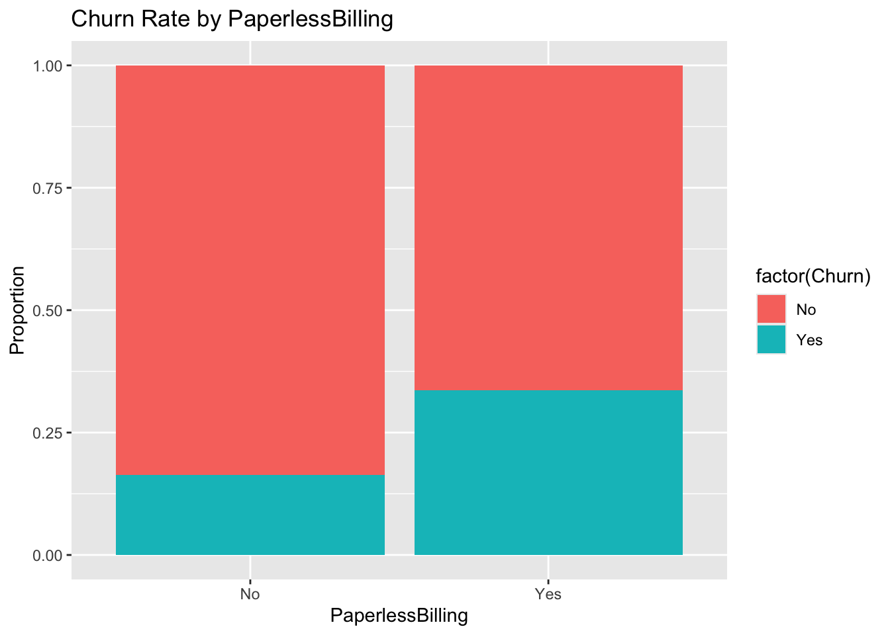
table(churn$PaymentMethod,churn$Churn)##
## No Yes
## Bank transfer (automatic) 1284 258
## Credit card (automatic) 1289 232
## Electronic check 1294 1071
## Mailed check 1296 308chisq.test(table(churn$PaymentMethod,churn$Churn))##
## Pearson's Chi-squared test
##
## data: table(churn$PaymentMethod, churn$Churn)
## X-squared = 645.43, df = 3, p-value < 2.2e-16ggplot(churn, aes(x = factor(PaymentMethod), fill = factor(Churn))) +
geom_bar(position = "fill") +
labs(title = "Churn Rate by PaymentMethod", x = "PaymentMethod", y = "Proportion") 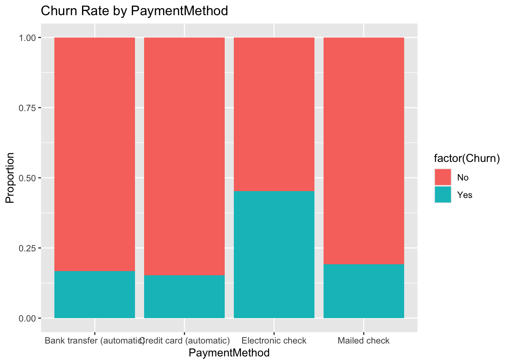
1.4 Numeric Variables
1.4.1 BoxPlots
boxplot(MonthlyCharges~Churn, data = churn)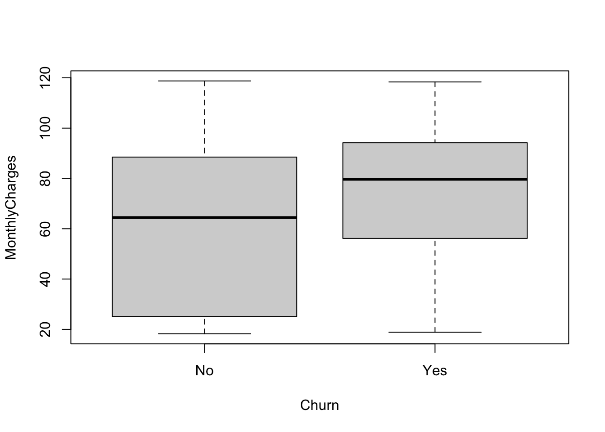
boxplot(tenure~Churn, data = churn)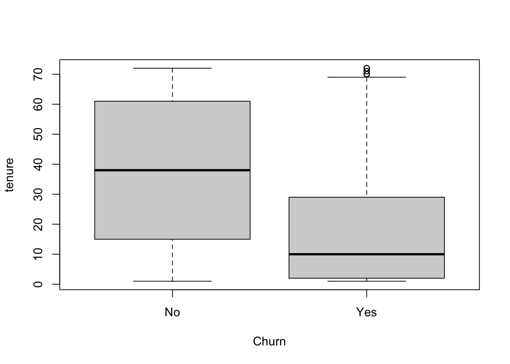
boxplot(TotalCharges~Churn, data = churn)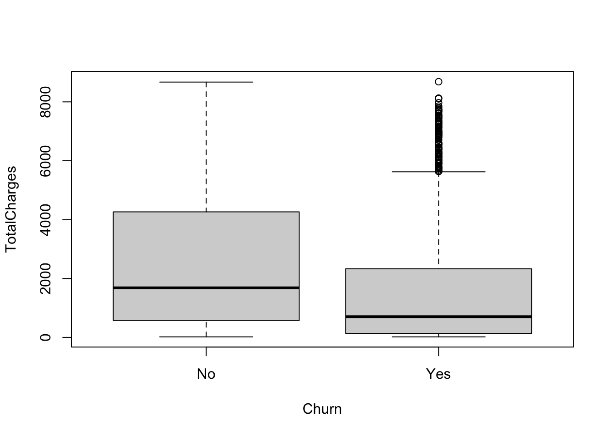
1.4.2 Distributions
MonthlyCharges, tenure, and TotalCharges
par(mfrow=c(2,3))
hist(churn$MonthlyCharges)
hist(churn$tenure)
hist(churn$TotalCharges)
hist(log(churn$MonthlyCharges))
hist(log(churn$tenure))
hist(log(churn$TotalCharges))
The numeric predictors are not normally distributed which may lead to the model having greater predictor power given certain values of predictors rather than others.
2 Model Assumptions
2.1 Significant predictors
Section A.1.3.2 shows the outcome of chi-square tests to assess the relationship between each variable and the outcome variable, Churn. These tests determined that the following variables are significantly related to Churn: SeniorCitizen, Partner, Dependents, MultipleLines, InternetService, OnlineSecurity, OnlineBackup, DeviceProtection, TechSupport, StreamingTV, StreamingMovies, Contract, PaperlessBilling and PaymentMethod. And all numeric variables, Tenure, MonthlyCharges, and TotalCharges have significantly different means for Churn status.
# Fit an initial model to further determine variable significance.
churn$Churn <- ifelse(churn$Churn == 'Yes',1,0)
churn.fit <- glm(Churn~.-customerID,family=binomial(link="logit"),data = churn)
summary(churn.fit)##
## Call:
## glm(formula = Churn ~ . - customerID, family = binomial(link = "logit"),
## data = churn)
##
## Coefficients: (7 not defined because of singularities)
## Estimate Std. Error z value Pr(>|z|)
## (Intercept) 1.165e+00 8.151e-01 1.430 0.15284
## genderMale -2.183e-02 6.480e-02 -0.337 0.73619
## SeniorCitizen 2.168e-01 8.453e-02 2.564 0.01033 *
## PartnerYes -3.840e-04 7.783e-02 -0.005 0.99606
## DependentsYes -1.485e-01 8.973e-02 -1.655 0.09796 .
## tenure -6.059e-02 6.236e-03 -9.716 < 2e-16 ***
## PhoneServiceYes 1.715e-01 6.487e-01 0.264 0.79153
## MultipleLinesNo phone service NA NA NA NA
## MultipleLinesYes 4.484e-01 1.773e-01 2.530 0.01142 *
## InternetServiceFiber optic 1.747e+00 7.981e-01 2.190 0.02855 *
## InternetServiceNo -1.786e+00 8.073e-01 -2.213 0.02691 *
## OnlineSecurityNo internet service NA NA NA NA
## OnlineSecurityYes -2.054e-01 1.787e-01 -1.150 0.25031
## OnlineBackupNo internet service NA NA NA NA
## OnlineBackupYes 2.604e-02 1.754e-01 0.148 0.88197
## DeviceProtectionNo internet service NA NA NA NA
## DeviceProtectionYes 1.474e-01 1.764e-01 0.836 0.40339
## TechSupportNo internet service NA NA NA NA
## TechSupportYes -1.805e-01 1.806e-01 -0.999 0.31759
## StreamingTVNo internet service NA NA NA NA
## StreamingTVYes 5.905e-01 3.263e-01 1.810 0.07035 .
## StreamingMoviesNo internet service NA NA NA NA
## StreamingMoviesYes 5.993e-01 3.267e-01 1.834 0.06658 .
## ContractOne year -6.608e-01 1.076e-01 -6.142 8.15e-10 ***
## ContractTwo year -1.357e+00 1.764e-01 -7.691 1.46e-14 ***
## PaperlessBillingYes 3.424e-01 7.450e-02 4.596 4.31e-06 ***
## PaymentMethodCredit card (automatic) -8.779e-02 1.141e-01 -0.770 0.44156
## PaymentMethodElectronic check 3.045e-01 9.450e-02 3.222 0.00127 **
## PaymentMethodMailed check -5.759e-02 1.149e-01 -0.501 0.61627
## MonthlyCharges -4.034e-02 3.176e-02 -1.270 0.20392
## TotalCharges 3.289e-04 7.063e-05 4.657 3.20e-06 ***
## ---
## Signif. codes: 0 '***' 0.001 '**' 0.01 '*' 0.05 '.' 0.1 ' ' 1
##
## (Dispersion parameter for binomial family taken to be 1)
##
## Null deviance: 8143.4 on 7031 degrees of freedom
## Residual deviance: 5826.3 on 7008 degrees of freedom
## AIC: 5874.3
##
## Number of Fisher Scoring iterations: 6require(coefplot)
coefplot(churn.fit)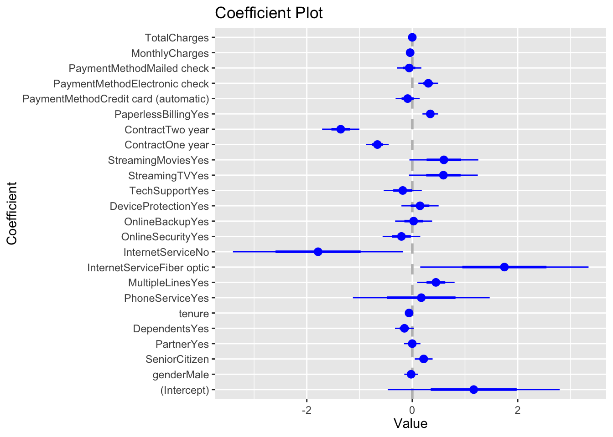
This model indicates that considering all variables available, the following variables are significantly related to Churn.
churn.fit.reduced <- glm(Churn~SeniorCitizen+tenure+MultipleLines+InternetService+Contract+PaperlessBilling+PaymentMethod+TotalCharges,family=binomial(link="logit"),data = churn)
summary(churn.fit.reduced)##
## Call:
## glm(formula = Churn ~ SeniorCitizen + tenure + MultipleLines +
## InternetService + Contract + PaperlessBilling + PaymentMethod +
## TotalCharges, family = binomial(link = "logit"), data = churn)
##
## Coefficients:
## Estimate Std. Error z value Pr(>|z|)
## (Intercept) -0.7524686 0.1216481 -6.186 6.19e-10 ***
## SeniorCitizen 0.2838042 0.0820511 3.459 0.000542 ***
## tenure -0.0623101 0.0059172 -10.530 < 2e-16 ***
## MultipleLinesNo phone service 0.7163172 0.1296922 5.523 3.33e-08 ***
## MultipleLinesYes 0.2794728 0.0788261 3.545 0.000392 ***
## InternetServiceFiber optic 0.9105034 0.0951849 9.566 < 2e-16 ***
## InternetServiceNo -0.5347664 0.1307872 -4.089 4.34e-05 ***
## ContractOne year -0.7177526 0.1051426 -6.826 8.70e-12 ***
## ContractTwo year -1.5309937 0.1736988 -8.814 < 2e-16 ***
## PaperlessBillingYes 0.3843680 0.0734646 5.232 1.68e-07 ***
## PaymentMethodCredit card (automatic) -0.0969663 0.1131124 -0.857 0.391303
## PaymentMethodElectronic check 0.3697148 0.0934143 3.958 7.56e-05 ***
## PaymentMethodMailed check -0.0803387 0.1135281 -0.708 0.479160
## TotalCharges 0.0003168 0.0000630 5.029 4.94e-07 ***
## ---
## Signif. codes: 0 '***' 0.001 '**' 0.01 '*' 0.05 '.' 0.1 ' ' 1
##
## (Dispersion parameter for binomial family taken to be 1)
##
## Null deviance: 8143.4 on 7031 degrees of freedom
## Residual deviance: 5899.8 on 7018 degrees of freedom
## AIC: 5927.8
##
## Number of Fisher Scoring iterations: 6But we will use variable selection to determine the ultimate best model.
2.2 Multicollinearity
# Xs are independent (uncorrelated)
cond.index(churn.fit, data=churn)## [1] 1.000000e+00 1.361638e+00 2.737057e+00 3.255377e+00 3.637219e+00
## [6] 3.720449e+00 3.993979e+00 4.232393e+00 4.362516e+00 4.723229e+00
## [11] 5.126693e+00 5.241772e+00 5.355070e+00 5.635948e+00 5.751611e+00
## [16] 6.355325e+00 6.648467e+00 6.716715e+00 6.907980e+00 7.422290e+00
## [21] 9.573179e+00 1.117690e+01 2.289433e+01 2.812095e+02 8.631410e+07
## [26] 1.021002e+08 1.021002e+08 1.021002e+08 1.021002e+08 1.021002e+08
## [31] 1.021002e+08cond.index(churn.fit.reduced, data=churn)## [1] 1.000000 1.851448 2.188398 2.371296 2.496958 2.842187 3.032654
## [8] 3.195287 4.156824 4.535447 5.204044 6.324844 9.710559 13.676272The CI for the full model is very high at 102,100,200. The reduced model with only variables signficant the 95 percent level has a much lower CI.
vif(churn.fit.reduced)## GVIF Df GVIF^(1/(2*Df))
## SeniorCitizen 1.085653 1 1.041947
## tenure 14.365387 1 3.790170
## MultipleLines 1.903615 2 1.174613
## InternetService 2.350769 2 1.238233
## Contract 1.515189 2 1.109473
## PaperlessBilling 1.113868 1 1.055399
## PaymentMethod 1.340114 3 1.050002
## TotalCharges 16.454504 1 4.056415None of the variance inflation factors for the variables in the reduced model exceeds the threshold of 10.
2.3 Outliers & Variable Distributions
Severe outliers do not appear to be a problem for any of the variables, but all variables do have either a non-normal, skewed, or slightly unbalanced distributions. Therefore, this dataset is likely to produce models with high variation.
plot(churn.fit.reduced, which = 3)
plot(churn.fit.reduced, which = 4)
churn[c(269,4266,4812),c("SeniorCitizen","tenure","MultipleLines","InternetService","Contract","PaperlessBilling","PaymentMethod","TotalCharges")]summary(churn[,c("SeniorCitizen","tenure","MultipleLines","InternetService","Contract","PaperlessBilling","PaymentMethod","TotalCharges")])## SeniorCitizen tenure MultipleLines InternetService
## Min. :0.0000 Min. : 1.00 Length:7032 Length:7032
## 1st Qu.:0.0000 1st Qu.: 9.00 Class :character Class :character
## Median :0.0000 Median :29.00 Mode :character Mode :character
## Mean :0.1624 Mean :32.42
## 3rd Qu.:0.0000 3rd Qu.:55.00
## Max. :1.0000 Max. :72.00
## Contract PaperlessBilling PaymentMethod TotalCharges
## Length:7032 Length:7032 Length:7032 Min. : 18.8
## Class :character Class :character Class :character 1st Qu.: 401.4
## Mode :character Mode :character Mode :character Median :1397.5
## Mean :2283.3
## 3rd Qu.:3794.7
## Max. :8684.8These three customers, c(269,4266,4812), are identified as potential influential observations. This may be because they have longer than average tenure as customers, all close to the 75th percentile of tenure length among the entire dataset.
2.4 Linearity
Relationship between log-odds of Churn and numeric predictors. [Linearity of numeric predictors for logit models] (https://stats.stackexchange.com/questions/169348/how-should-i-check-the-assumption-of-linearity-to-the-logit-for-the-continuous-i)
summary(churn[,c('tenure','TotalCharges')])## tenure TotalCharges
## Min. : 1.00 Min. : 18.8
## 1st Qu.: 9.00 1st Qu.: 401.4
## Median :29.00 Median :1397.5
## Mean :32.42 Mean :2283.3
## 3rd Qu.:55.00 3rd Qu.:3794.7
## Max. :72.00 Max. :8684.8par(mfrow=c(1,2))
churn.fit.num <- glm(Churn~tenure+TotalCharges,family=binomial(link="logit"), data = churn)
log.odds <- predict(churn.fit.num, type = "link")
plot(churn$tenure,log.odds)
plot(churn$TotalCharges,log.odds)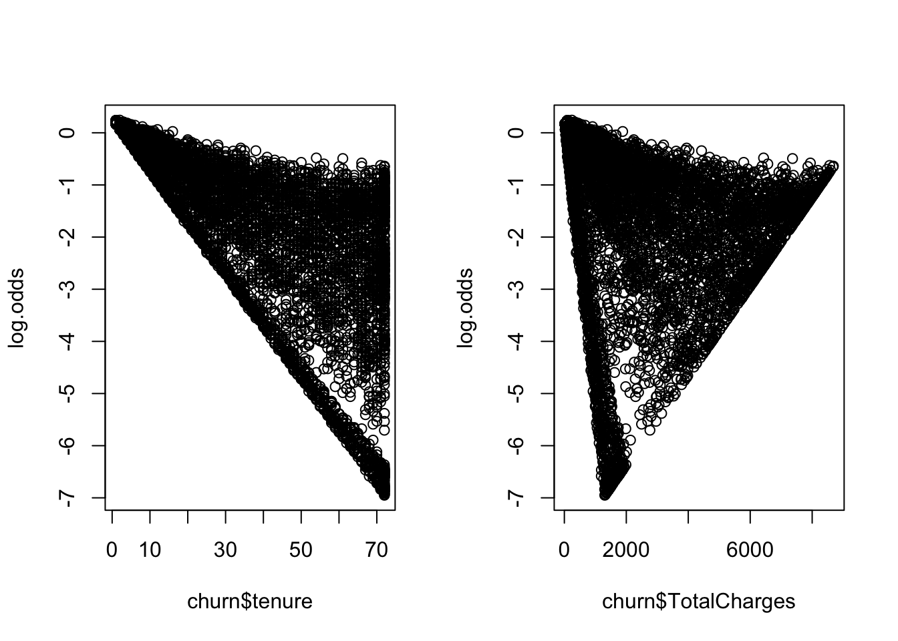
odds <- exp(log.odds)
probabilities <- odds/(1+odds)3 Variable Selection
churn.null <- glm(Churn~1,family=binomial(link="logit"),data = churn)
# Because there are so many variables, we can afford to be restrictive on variable selection
k <- qchisq(0.01, 1, lower.tail=F)
churn.stepwise <- step(churn.fit,
scope=list(lower = churn.null,upper = churn.fit),
direction="both",test="F",
k = k)## Start: AIC=5985.51
## Churn ~ (customerID + gender + SeniorCitizen + Partner + Dependents +
## tenure + PhoneService + MultipleLines + InternetService +
## OnlineSecurity + OnlineBackup + DeviceProtection + TechSupport +
## StreamingTV + StreamingMovies + Contract + PaperlessBilling +
## PaymentMethod + MonthlyCharges + TotalCharges) - customerID
##
##
## Step: AIC=5985.51
## Churn ~ gender + SeniorCitizen + Partner + Dependents + tenure +
## MultipleLines + InternetService + OnlineSecurity + OnlineBackup +
## DeviceProtection + TechSupport + StreamingTV + StreamingMovies +
## Contract + PaperlessBilling + PaymentMethod + MonthlyCharges +
## TotalCharges
##
## Df Deviance AIC F value Pr(>F)
## - Partner 1 5826.3 5978.9 0.0000 0.995683
## - OnlineBackup 1 5826.3 5978.9 0.0265 0.870655
## - gender 1 5826.4 5979.0 0.1365 0.711779
## - DeviceProtection 1 5827.0 5979.6 0.8400 0.359434
## - TechSupport 1 5827.3 5979.9 1.2023 0.272899
## - OnlineSecurity 1 5827.6 5980.2 1.5908 0.207249
## - MonthlyCharges 1 5827.9 5980.5 1.9425 0.163445
## - Dependents 1 5829.0 5981.6 3.3074 0.069011 .
## - StreamingTV 1 5829.6 5982.2 3.9445 0.047063 *
## - StreamingMovies 1 5829.6 5982.2 4.0537 0.044114 *
## - InternetService 1 5831.1 5983.7 5.7775 0.016258 *
## - SeniorCitizen 1 5832.8 5985.4 7.8961 0.004968 **
## <none> 5826.3 5985.5
## - PaymentMethod 3 5852.5 5991.8 10.4974 6.921e-07 ***
## - MultipleLines 2 5846.8 5992.7 12.3269 4.528e-06 ***
## - PaperlessBilling 1 5847.5 6000.1 25.5466 4.428e-07 ***
## - TotalCharges 1 5849.1 6001.7 27.4197 1.685e-07 ***
## - Contract 2 5908.5 6054.5 49.4708 < 2.2e-16 ***
## - tenure 1 5937.9 6090.5 134.2485 < 2.2e-16 ***
## ---
## Signif. codes: 0 '***' 0.001 '**' 0.01 '*' 0.05 '.' 0.1 ' ' 1
##
## Step: AIC=5978.88
## Churn ~ gender + SeniorCitizen + Dependents + tenure + MultipleLines +
## InternetService + OnlineSecurity + OnlineBackup + DeviceProtection +
## TechSupport + StreamingTV + StreamingMovies + Contract +
## PaperlessBilling + PaymentMethod + MonthlyCharges + TotalCharges
##
## Df Deviance AIC F value Pr(>F)
## - OnlineBackup 1 5826.3 5972.3 0.0265 0.870693
## - gender 1 5826.4 5972.4 0.1366 0.711670
## - DeviceProtection 1 5827.0 5972.9 0.8407 0.359238
## - TechSupport 1 5827.3 5973.2 1.2030 0.272762
## - OnlineSecurity 1 5827.6 5973.6 1.5924 0.207020
## - MonthlyCharges 1 5827.9 5973.9 1.9433 0.163357
## - StreamingTV 1 5829.6 5975.5 3.9468 0.046999 *
## - Dependents 1 5829.6 5975.6 4.0319 0.044685 *
## - StreamingMovies 1 5829.6 5975.6 4.0556 0.044062 *
## - InternetService 1 5831.1 5977.0 5.7810 0.016226 *
## <none> 5826.3 5978.9
## - SeniorCitizen 1 5832.9 5978.9 7.9914 0.004713 **
## - PaymentMethod 3 5852.5 5985.2 10.5053 6.842e-07 ***
## + Partner 1 5826.3 5985.5 0.0000 0.995683
## - MultipleLines 2 5846.8 5986.1 12.3318 4.506e-06 ***
## - PaperlessBilling 1 5847.5 5993.5 25.5506 4.419e-07 ***
## - TotalCharges 1 5849.1 5995.0 27.4238 1.682e-07 ***
## - Contract 2 5908.5 6047.9 49.4783 < 2.2e-16 ***
## - tenure 1 5938.7 6084.7 135.2905 < 2.2e-16 ***
## ---
## Signif. codes: 0 '***' 0.001 '**' 0.01 '*' 0.05 '.' 0.1 ' ' 1
##
## Step: AIC=5972.26
## Churn ~ gender + SeniorCitizen + Dependents + tenure + MultipleLines +
## InternetService + OnlineSecurity + DeviceProtection + TechSupport +
## StreamingTV + StreamingMovies + Contract + PaperlessBilling +
## PaymentMethod + MonthlyCharges + TotalCharges
##
## Df Deviance AIC F value Pr(>F)
## - gender 1 5826.4 5965.7 0.1400 0.7082855
## - DeviceProtection 1 5827.7 5967.1 1.7283 0.1886711
## - TechSupport 1 5829.6 5968.9 3.9831 0.0459966 *
## - Dependents 1 5829.6 5969.0 4.0233 0.0449149 *
## - OnlineSecurity 1 5830.6 5969.9 5.1377 0.0234419 *
## - MonthlyCharges 1 5832.9 5972.2 7.9598 0.0047963 **
## <none> 5826.3 5972.3
## - SeniorCitizen 1 5832.9 5972.3 7.9841 0.0047323 **
## - StreamingTV 1 5838.0 5977.4 14.1423 0.0001709 ***
## - StreamingMovies 1 5838.6 5977.9 14.7576 0.0001233 ***
## - PaymentMethod 3 5852.5 5978.6 10.5053 6.842e-07 ***
## + OnlineBackup 1 5826.3 5978.9 0.0265 0.8706934
## + Partner 1 5826.3 5978.9 0.0000 0.9975429
## - MultipleLines 2 5847.8 5980.5 12.9562 2.419e-06 ***
## - InternetService 1 5847.3 5986.7 25.3094 5.005e-07 ***
## - PaperlessBilling 1 5847.6 5986.9 25.6292 4.243e-07 ***
## - TotalCharges 1 5849.2 5988.5 27.5011 1.616e-07 ***
## - Contract 2 5908.6 6041.2 49.4844 < 2.2e-16 ***
## - tenure 1 5938.7 6078.1 135.2829 < 2.2e-16 ***
## ---
## Signif. codes: 0 '***' 0.001 '**' 0.01 '*' 0.05 '.' 0.1 ' ' 1
##
## Step: AIC=5965.74
## Churn ~ SeniorCitizen + Dependents + tenure + MultipleLines +
## InternetService + OnlineSecurity + DeviceProtection + TechSupport +
## StreamingTV + StreamingMovies + Contract + PaperlessBilling +
## PaymentMethod + MonthlyCharges + TotalCharges
##
## Df Deviance AIC F value Pr(>F)
## - DeviceProtection 1 5827.8 5960.5 1.7216 0.1895293
## - TechSupport 1 5829.7 5962.4 3.9890 0.0458366 *
## - Dependents 1 5829.8 5962.5 4.0325 0.0446692 *
## - OnlineSecurity 1 5830.7 5963.4 5.1167 0.0237271 *
## - MonthlyCharges 1 5833.0 5965.7 7.9394 0.0048506 **
## <none> 5826.4 5965.7
## - SeniorCitizen 1 5833.0 5965.7 7.9875 0.0047234 **
## - StreamingTV 1 5838.1 5970.8 14.1253 0.0001724 ***
## - StreamingMovies 1 5838.7 5971.4 14.7487 0.0001239 ***
## - PaymentMethod 3 5852.6 5972.0 10.5092 6.804e-07 ***
## + gender 1 5826.3 5972.3 0.1400 0.7082855
## + OnlineBackup 1 5826.4 5972.4 0.0299 0.8628053
## + Partner 1 5826.4 5972.4 0.0001 0.9932433
## - MultipleLines 2 5847.9 5974.0 12.9550 2.422e-06 ***
## - InternetService 1 5847.4 5980.1 25.2888 5.058e-07 ***
## - PaperlessBilling 1 5847.7 5980.4 25.6681 4.158e-07 ***
## - TotalCharges 1 5849.3 5982.0 27.4915 1.624e-07 ***
## - Contract 2 5908.6 6034.7 49.4587 < 2.2e-16 ***
## - tenure 1 5938.9 6071.6 135.3674 < 2.2e-16 ***
## ---
## Signif. codes: 0 '***' 0.001 '**' 0.01 '*' 0.05 '.' 0.1 ' ' 1
##
## Step: AIC=5960.54
## Churn ~ SeniorCitizen + Dependents + tenure + MultipleLines +
## InternetService + OnlineSecurity + TechSupport + StreamingTV +
## StreamingMovies + Contract + PaperlessBilling + PaymentMethod +
## MonthlyCharges + TotalCharges
##
## Df Deviance AIC F value Pr(>F)
## - Dependents 1 5831.2 5957.3 4.0895 0.0431874 *
## - MonthlyCharges 1 5833.4 5959.5 6.7402 0.0094459 **
## - TechSupport 1 5834.1 5960.1 7.4812 0.0062503 **
## <none> 5827.8 5960.5
## - SeniorCitizen 1 5834.5 5960.6 7.9961 0.0047011 **
## - OnlineSecurity 1 5836.0 5962.1 9.8742 0.0016831 **
## - StreamingTV 1 5838.7 5964.8 13.1090 0.0002960 ***
## - StreamingMovies 1 5839.3 5965.4 13.8304 0.0002016 ***
## + DeviceProtection 1 5826.4 5965.7 1.7216 0.1895293
## + OnlineBackup 1 5827.1 5966.4 0.8985 0.3432191
## - PaymentMethod 3 5853.8 5966.6 10.4160 7.788e-07 ***
## + gender 1 5827.7 5967.1 0.1331 0.7152622
## + Partner 1 5827.8 5967.2 0.0014 0.9697636
## - MultipleLines 2 5848.2 5967.6 12.2431 4.922e-06 ***
## - PaperlessBilling 1 5848.9 5975.0 25.3844 4.815e-07 ***
## - TotalCharges 1 5850.6 5976.6 27.3620 1.736e-07 ***
## - InternetService 1 5852.5 5978.6 29.6994 5.217e-08 ***
## - Contract 2 5909.0 6028.4 48.8299 < 2.2e-16 ***
## - tenure 1 5940.6 6066.6 135.6185 < 2.2e-16 ***
## ---
## Signif. codes: 0 '***' 0.001 '**' 0.01 '*' 0.05 '.' 0.1 ' ' 1
##
## Step: AIC=5957.3
## Churn ~ SeniorCitizen + tenure + MultipleLines + InternetService +
## OnlineSecurity + TechSupport + StreamingTV + StreamingMovies +
## Contract + PaperlessBilling + PaymentMethod + MonthlyCharges +
## TotalCharges
##
## Df Deviance AIC F value Pr(>F)
## - MonthlyCharges 1 5837.0 5956.4 6.9393 0.0084506 **
## - TechSupport 1 5837.4 5956.9 7.4476 0.0063678 **
## <none> 5831.2 5957.3
## - OnlineSecurity 1 5839.6 5959.1 10.0837 0.0015023 **
## - SeniorCitizen 1 5839.7 5959.1 10.1914 0.0014172 **
## + Dependents 1 5827.8 5960.5 4.0895 0.0431874 *
## - StreamingTV 1 5842.1 5961.6 13.1150 0.0002950 ***
## - StreamingMovies 1 5843.0 5962.4 14.1473 0.0001704 ***
## + DeviceProtection 1 5829.8 5962.5 1.7783 0.1824064
## + OnlineBackup 1 5830.4 5963.1 0.9683 0.3251377
## + Partner 1 5830.7 5963.4 0.6668 0.4141968
## - PaymentMethod 3 5857.6 5963.8 10.5743 6.191e-07 ***
## + gender 1 5831.1 5963.8 0.1414 0.7069131
## - MultipleLines 2 5851.8 5964.6 12.3686 4.343e-06 ***
## - PaperlessBilling 1 5852.8 5972.2 25.9393 3.615e-07 ***
## - TotalCharges 1 5854.7 5974.2 28.2693 1.088e-07 ***
## - InternetService 1 5856.5 5975.9 30.3326 3.769e-08 ***
## - Contract 2 5915.3 6028.1 50.5738 < 2.2e-16 ***
## - tenure 1 5946.8 6066.2 138.9546 < 2.2e-16 ***
## ---
## Signif. codes: 0 '***' 0.001 '**' 0.01 '*' 0.05 '.' 0.1 ' ' 1
##
## Step: AIC=5956.44
## Churn ~ SeniorCitizen + tenure + MultipleLines + InternetService +
## OnlineSecurity + TechSupport + StreamingTV + StreamingMovies +
## Contract + PaperlessBilling + PaymentMethod + TotalCharges
##
## Df Deviance AIC F value Pr(>F)
## - StreamingTV 1 5842.3 5955.1 6.3540 0.011734 *
## - StreamingMovies 1 5843.3 5956.1 7.5528 0.006007 **
## <none> 5837.0 5956.4
## + MonthlyCharges 1 5831.2 5957.3 6.9393 0.008451 **
## + OnlineBackup 1 5831.8 5957.9 6.2596 0.012375 *
## - SeniorCitizen 1 5845.4 5958.2 10.1244 0.001470 **
## + Dependents 1 5833.4 5959.5 4.2882 0.038415 *
## + Partner 1 5836.4 5962.5 0.7297 0.393010
## + DeviceProtection 1 5836.6 5962.6 0.5364 0.463953
## + gender 1 5836.9 5963.0 0.1260 0.722642
## - PaymentMethod 3 5863.9 5963.4 10.7803 4.594e-07 ***
## - TotalCharges 1 5856.5 5969.3 23.4663 1.298e-06 ***
## - TechSupport 1 5857.6 5970.4 24.7227 6.777e-07 ***
## - MultipleLines 2 5865.0 5971.2 16.8217 5.151e-08 ***
## - PaperlessBilling 1 5858.6 5971.4 25.9429 3.608e-07 ***
## - OnlineSecurity 1 5860.5 5973.3 28.2653 1.090e-07 ***
## - InternetService 1 5898.6 6011.4 73.9815 < 2.2e-16 ***
## - Contract 2 5923.9 6030.0 52.1868 < 2.2e-16 ***
## - tenure 1 5948.3 6061.1 133.7254 < 2.2e-16 ***
## ---
## Signif. codes: 0 '***' 0.001 '**' 0.01 '*' 0.05 '.' 0.1 ' ' 1
##
## Step: AIC=5955.09
## Churn ~ SeniorCitizen + tenure + MultipleLines + InternetService +
## OnlineSecurity + TechSupport + StreamingMovies + Contract +
## PaperlessBilling + PaymentMethod + TotalCharges
##
## Df Deviance AIC F value Pr(>F)
## <none> 5842.3 5955.1
## + OnlineBackup 1 5836.8 5956.2 6.6031 0.0102009 *
## + StreamingTV 1 5837.0 5956.4 6.3540 0.0117338 *
## - SeniorCitizen 1 5850.5 5956.7 9.9076 0.0016529 **
## + Dependents 1 5838.9 5958.4 4.0383 0.0445164 *
## - StreamingMovies 1 5852.4 5958.5 12.0852 0.0005113 ***
## + Partner 1 5841.8 5961.2 0.6241 0.4295579
## + DeviceProtection 1 5842.1 5961.5 0.2881 0.5914718
## + MonthlyCharges 1 5842.1 5961.6 0.1834 0.6685043
## + gender 1 5842.2 5961.6 0.1335 0.7148187
## - PaymentMethod 3 5871.2 5964.1 11.5578 1.487e-07 ***
## - TechSupport 1 5862.1 5968.3 23.7728 1.108e-06 ***
## - MultipleLines 2 5871.9 5971.4 17.7594 2.026e-08 ***
## - PaperlessBilling 1 5865.3 5971.5 27.6200 1.520e-07 ***
## - OnlineSecurity 1 5867.1 5973.2 29.7671 5.038e-08 ***
## - TotalCharges 1 5867.8 5974.0 30.6369 3.224e-08 ***
## - InternetService 1 5904.1 6010.3 74.2505 < 2.2e-16 ***
## - Contract 2 5927.4 6026.9 51.0799 < 2.2e-16 ***
## - tenure 1 5964.8 6071.0 147.1280 < 2.2e-16 ***
## ---
## Signif. codes: 0 '***' 0.001 '**' 0.01 '*' 0.05 '.' 0.1 ' ' 1summary(churn.stepwise)##
## Call:
## glm(formula = Churn ~ SeniorCitizen + tenure + MultipleLines +
## InternetService + OnlineSecurity + TechSupport + StreamingMovies +
## Contract + PaperlessBilling + PaymentMethod + TotalCharges,
## family = binomial(link = "logit"), data = churn)
##
## Coefficients: (3 not defined because of singularities)
## Estimate Std. Error z value Pr(>|z|)
## (Intercept) -5.483e-01 1.293e-01 -4.240 2.23e-05 ***
## SeniorCitizen 2.381e-01 8.279e-02 2.876 0.004025 **
## tenure -6.192e-02 6.104e-03 -10.145 < 2e-16 ***
## MultipleLinesNo phone service 6.441e-01 1.322e-01 4.872 1.10e-06 ***
## MultipleLinesYes 2.515e-01 7.946e-02 3.165 0.001549 **
## InternetServiceFiber optic 7.647e-01 9.796e-02 7.806 5.90e-15 ***
## InternetServiceNo -7.530e-01 1.361e-01 -5.531 3.18e-08 ***
## OnlineSecurityNo internet service NA NA NA NA
## OnlineSecurityYes -4.180e-01 8.449e-02 -4.947 7.53e-07 ***
## TechSupportNo internet service NA NA NA NA
## TechSupportYes -3.789e-01 8.554e-02 -4.429 9.46e-06 ***
## StreamingMoviesNo internet service NA NA NA NA
## StreamingMoviesYes 2.490e-01 7.861e-02 3.168 0.001537 **
## ContractOne year -6.650e-01 1.067e-01 -6.234 4.55e-10 ***
## ContractTwo year -1.367e+00 1.757e-01 -7.781 7.20e-15 ***
## PaperlessBillingYes 3.546e-01 7.417e-02 4.781 1.74e-06 ***
## PaymentMethodCredit card (automatic) -9.244e-02 1.139e-01 -0.812 0.416984
## PaymentMethodElectronic check 3.175e-01 9.423e-02 3.370 0.000752 ***
## PaymentMethodMailed check -6.107e-02 1.145e-01 -0.533 0.593821
## TotalCharges 3.305e-04 6.723e-05 4.917 8.80e-07 ***
## ---
## Signif. codes: 0 '***' 0.001 '**' 0.01 '*' 0.05 '.' 0.1 ' ' 1
##
## (Dispersion parameter for binomial family taken to be 1)
##
## Null deviance: 8143.4 on 7031 degrees of freedom
## Residual deviance: 5842.3 on 7015 degrees of freedom
## AIC: 5876.3
##
## Number of Fisher Scoring iterations: 6Variables selected:
churn.stepwise$call## glm(formula = Churn ~ SeniorCitizen + tenure + MultipleLines +
## InternetService + OnlineSecurity + TechSupport + StreamingMovies +
## Contract + PaperlessBilling + PaymentMethod + TotalCharges,
## family = binomial(link = "logit"), data = churn)churn.fit.reduced$call## glm(formula = Churn ~ SeniorCitizen + tenure + MultipleLines +
## InternetService + Contract + PaperlessBilling + PaymentMethod +
## TotalCharges, family = binomial(link = "logit"), data = churn)# Remove streaming movies
churn.stepwise.1 <- glm(formula = Churn ~ SeniorCitizen + tenure + MultipleLines +
InternetService + OnlineSecurity + TechSupport +
Contract + PaperlessBilling + PaymentMethod + TotalCharges,
family = binomial(link = "logit"), data = churn)
# Remove streaming movies, TechSupport
churn.stepwise.2 <- glm(formula = Churn ~ SeniorCitizen + tenure + MultipleLines +
InternetService + OnlineSecurity +
Contract + PaperlessBilling + PaymentMethod + TotalCharges,
family = binomial(link = "logit"), data = churn)
anova(churn.fit.reduced,churn.stepwise.2,churn.stepwise.1,churn.stepwise)Model 2 is significantly better at explaining Churn. This stepwise model adds back in three variables to to the reduced model: OnlineSecurity, TechSupport, StreamingMovies.
3.1 Re-check Multicollinearity
cond.index(churn.stepwise, data=churn)## [1] 1.000000e+00 1.372306e+00 2.238997e+00 2.566460e+00 2.837376e+00
## [6] 2.951097e+00 3.286880e+00 3.574375e+00 3.943486e+00 4.141395e+00
## [11] 4.519665e+00 4.935432e+00 5.210376e+00 5.864349e+00 7.229496e+00
## [16] 1.119355e+01 1.709818e+01 3.861473e+08 8.428337e+08 2.159073e+09cond.index(churn.stepwise.1, data=churn)## [1] 1.000000e+00 1.482721e+00 2.141341e+00 2.450337e+00 2.707356e+00
## [6] 2.821385e+00 3.149718e+00 3.416094e+00 3.881858e+00 3.962582e+00
## [11] 4.613957e+00 4.927430e+00 5.648598e+00 6.874077e+00 1.069470e+01
## [16] 1.555776e+01 3.044554e+08 6.123331e+08cond.index(churn.stepwise.2, data=churn)## [1] 1.000000e+00 1.647890e+00 2.157724e+00 2.369799e+00 2.598730e+00
## [6] 2.762392e+00 3.033465e+00 3.290736e+00 3.759132e+00 4.364566e+00
## [11] 4.731612e+00 5.384280e+00 6.597211e+00 1.022308e+01 1.443900e+01
## [16] 4.363788e+08cond.index(churn.fit.reduced, data=churn)## [1] 1.000000 1.851448 2.188398 2.371296 2.496958 2.842187 3.032654
## [8] 3.195287 4.156824 4.535447 5.204044 6.324844 9.710559 13.6762724 Model Selection
4.1 Logistic Regression
churn.logreg <- glm(Churn~SeniorCitizen+tenure+MultipleLines+InternetService+Contract+PaperlessBilling+PaymentMethod+TotalCharges,
family=binomial(link="logit"),
data = churn)
summary(churn.logreg)##
## Call:
## glm(formula = Churn ~ SeniorCitizen + tenure + MultipleLines +
## InternetService + Contract + PaperlessBilling + PaymentMethod +
## TotalCharges, family = binomial(link = "logit"), data = churn)
##
## Coefficients:
## Estimate Std. Error z value Pr(>|z|)
## (Intercept) -0.7524686 0.1216481 -6.186 6.19e-10 ***
## SeniorCitizen 0.2838042 0.0820511 3.459 0.000542 ***
## tenure -0.0623101 0.0059172 -10.530 < 2e-16 ***
## MultipleLinesNo phone service 0.7163172 0.1296922 5.523 3.33e-08 ***
## MultipleLinesYes 0.2794728 0.0788261 3.545 0.000392 ***
## InternetServiceFiber optic 0.9105034 0.0951849 9.566 < 2e-16 ***
## InternetServiceNo -0.5347664 0.1307872 -4.089 4.34e-05 ***
## ContractOne year -0.7177526 0.1051426 -6.826 8.70e-12 ***
## ContractTwo year -1.5309937 0.1736988 -8.814 < 2e-16 ***
## PaperlessBillingYes 0.3843680 0.0734646 5.232 1.68e-07 ***
## PaymentMethodCredit card (automatic) -0.0969663 0.1131124 -0.857 0.391303
## PaymentMethodElectronic check 0.3697148 0.0934143 3.958 7.56e-05 ***
## PaymentMethodMailed check -0.0803387 0.1135281 -0.708 0.479160
## TotalCharges 0.0003168 0.0000630 5.029 4.94e-07 ***
## ---
## Signif. codes: 0 '***' 0.001 '**' 0.01 '*' 0.05 '.' 0.1 ' ' 1
##
## (Dispersion parameter for binomial family taken to be 1)
##
## Null deviance: 8143.4 on 7031 degrees of freedom
## Residual deviance: 5899.8 on 7018 degrees of freedom
## AIC: 5927.8
##
## Number of Fisher Scoring iterations: 6broom::tidy(churn.logreg)The polynomial model is significantly better.
log.odds <- coef(churn.logreg)
odds <- exp(coef(churn.logreg))
prob <- odds/(1+odds)
cbind(log.odds, odds, prob)## log.odds odds prob
## (Intercept) -0.7524685955 0.4712019 0.3202836
## SeniorCitizen 0.2838041796 1.3281728 0.5704786
## tenure -0.0623100773 0.9395915 0.4844275
## MultipleLinesNo phone service 0.7163171797 2.0468810 0.6717955
## MultipleLinesYes 0.2794728130 1.3224325 0.5694170
## InternetServiceFiber optic 0.9105034442 2.4855736 0.7131032
## InternetServiceNo -0.5347664326 0.5858061 0.3694059
## ContractOne year -0.7177525891 0.4878474 0.3278881
## ContractTwo year -1.5309937176 0.2163206 0.1778483
## PaperlessBillingYes 0.3843680352 1.4686859 0.5949262
## PaymentMethodCredit card (automatic) -0.0969662899 0.9075866 0.4757774
## PaymentMethodElectronic check 0.3697148405 1.4473218 0.5913901
## PaymentMethodMailed check -0.0803387365 0.9228037 0.4799261
## TotalCharges 0.0003168002 1.0003169 0.50007924.1.1 Test/Train Split
set.seed(1)
n <- nrow(churn)
train <- sample(n,n*0.60)4.1.2 Linear Variables
churn.logreg.linear.train <- glm(Churn ~ SeniorCitizen + tenure + MultipleLines + InternetService + Contract + PaperlessBilling + PaymentMethod + TotalCharges,
family=binomial(link="logit"),
data = churn[train,])
probs <- predict(churn.logreg.linear.train, churn[-train,], type = "response")
# Lowered the threshold manually to 0.35 just by trial and error
preds <- ifelse(probs>0.35, 1, 0)
conf.mat <- table(preds, churn$Churn[-train])
TruN=conf.mat[1,1] # True negatives, row 1 col 1
TruP=conf.mat[2,2] # True positives, row 2 col 2
FalP=conf.mat[2,1] # False positives, etc.
FalN=conf.mat[1,2] # False negatives
TotN=conf.mat[1,1] + conf.mat[2,1] # Total negatives
TotP=conf.mat[1,2] + conf.mat[2,2] # Total positives
Tot=TotN+TotP # Matrix total
Accuracy=(TruN+TruP)/Tot
Error=(FalN+FalP)/Tot
Sensitivity=TruP/TotP # Proportion of correct positives
Specificity=TruN/TotN # Proportion of correct negatives
FalPos = 1 - Specificity
print(c("Accuracy"=Accuracy,
"Error"=Error,
"Sensitivity"=Sensitivity,
"Specificity"=Specificity,
"False Positives"=FalPos), digits=2) # Prints fewer digits## Accuracy Error Sensitivity Specificity False Positives
## 0.77 0.23 0.70 0.80 0.20logreg.linear.rates <- c("Accuracy"=Accuracy,
"Error"=Error,
"Sensitivity"=Sensitivity,
"Specificity"=Specificity,
"False Positives"=FalPos)
pred <- prediction(preds,churn$Churn[-train])
perf <- performance(pred,"tpr","fpr")
plot(perf,colorize=T)auc <- performance(pred,"auc")
c(auc@y.name[[1]], auc@y.values[[1]])## [1] "Area under the ROC curve" "0.752133952220864"4.2 Linear Discriminant Analysis
churn.lda <- lda(Churn ~ SeniorCitizen + tenure + MultipleLines + InternetService + Contract + PaperlessBilling + PaymentMethod + TotalCharges,
data = churn[train,])
preds <- predict(churn.lda,churn[-train,])$posterior[,2]
preds <- ifelse(preds > 0.35, 1, 0)
conf.mat <- table(preds, churn$Churn[-train])
TruN=conf.mat[1,1] # True negatives, row 1 col 1
TruP=conf.mat[2,2] # True positives, row 2 col 2
FalP=conf.mat[2,1] # False positives, etc.
FalN=conf.mat[1,2] # False negatives
TotN=conf.mat[1,1] + conf.mat[2,1] # Total negatives
TotP=conf.mat[1,2] + conf.mat[2,2] # Total positives
Tot=TotN+TotP # Matrix total
Accuracy=(TruN+TruP)/Tot
Error=(FalN+FalP)/Tot
Sensitivity=TruP/TotP # Proportion of correct positives
Specificity=TruN/TotN # Proportion of correct negatives
FalPos = 1 - Specificity
print(c("Accuracy"=Accuracy,
"Error"=Error,
"Sensitivity"=Sensitivity,
"Specificity"=Specificity,
"False Positives"=FalPos), digits=2) # Prints fewer digits## Accuracy Error Sensitivity Specificity False Positives
## 0.78 0.22 0.67 0.82 0.18lda.rates <- c("Accuracy"=Accuracy,
"Error"=Error,
"Sensitivity"=Sensitivity,
"Specificity"=Specificity,
"False Positives"=FalPos)
pred <- prediction(preds,churn$Churn[-train])
perf <- performance(pred,"tpr","fpr")
plot(perf,colorize=T)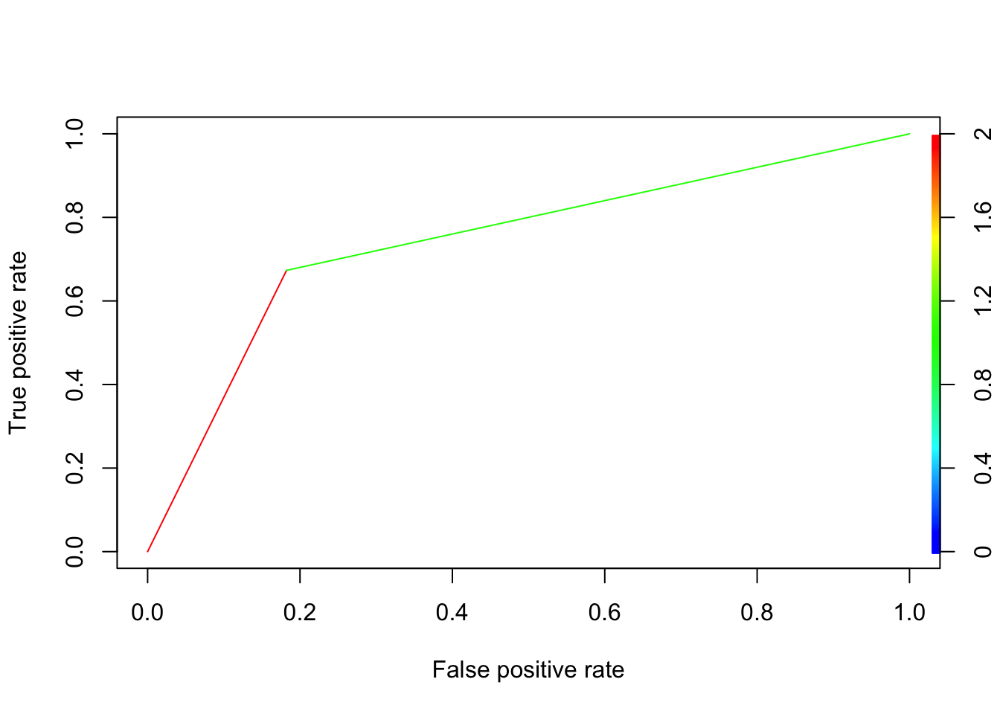
auc <- performance(pred,"auc")
c(auc@y.name[[1]], auc@y.values[[1]])## [1] "Area under the ROC curve" "0.745390497656887"4.3 Random Forest
set.seed(123)
churn.rf <- randomForest(as.factor(Churn) ~ SeniorCitizen + tenure + MultipleLines + InternetService + Contract + PaperlessBilling + PaymentMethod + TotalCharges,
data = churn[train,],
importance=T,
mtry=8)
plot(churn.rf)
varImpPlot(churn.rf) 
importance(churn.rf)## 0 1 MeanDecreaseAccuracy MeanDecreaseGini
## SeniorCitizen 23.5077591 0.7560151 19.563656 47.31397
## tenure 32.9029022 23.3693999 58.278776 277.99436
## MultipleLines 0.9373841 10.7603795 8.315747 48.39879
## InternetService 13.7052240 52.6497915 51.015557 108.51806
## Contract -22.9653530 78.9509570 39.353273 276.79717
## PaperlessBilling 0.8453461 16.2492299 11.320629 53.43850
## PaymentMethod -0.4391000 15.8995179 10.606852 105.40043
## TotalCharges 20.2527629 5.7149302 30.235313 699.33935# Learned how to produce probabilites from trees here: https://stackoverflow.com/questions/64651101/is-there-a-way-to-change-threshold-of-a-classification-within-a-model-in-caret-r
preds <- predict(churn.rf,churn[-train,], type = "prob")[,2]
preds <- ifelse(probs>0.35, 1, 0)
conf.mat <- table(preds, churn$Churn[-train])
TruN=conf.mat[1,1] # True negatives, row 1 col 1
TruP=conf.mat[2,2] # True positives, row 2 col 2
FalP=conf.mat[2,1] # False positives, etc.
FalN=conf.mat[1,2] # False negatives
TotN=conf.mat[1,1] + conf.mat[2,1] # Total negatives
TotP=conf.mat[1,2] + conf.mat[2,2] # Total positives
Tot=TotN+TotP # Matrix total
Accuracy=(TruN+TruP)/Tot
Error=(FalN+FalP)/Tot
Sensitivity=TruP/TotP # Proportion of correct positives
Specificity=TruN/TotN # Proportion of correct negatives
FalPos = 1 - Specificity
print(c("Accuracy"=Accuracy,
"Error"=Error,
"Sensitivity"=Sensitivity,
"Specificity"=Specificity,
"False Positives"=FalPos), digits=2) # Prints fewer digits## Accuracy Error Sensitivity Specificity False Positives
## 0.77 0.23 0.70 0.80 0.20rf.rates <- c("Accuracy"=Accuracy,
"Error"=Error,
"Sensitivity"=Sensitivity,
"Specificity"=Specificity,
"False Positives"=FalPos)
# convert preds to numeric
preds <- ifelse(as.character(preds) == '0',0,1)
pred <- prediction(preds,churn$Churn[-train])
perf <- performance(pred,"tpr","fpr")
plot(perf,colorize=T)
auc <- performance(pred,"auc")
c(auc@y.name[[1]], auc@y.values[[1]])## [1] "Area under the ROC curve" "0.752133952220864"5 Models Performance Summary
round(rbind(logreg.linear.rates,lda.rates,rf.rates),5)## Accuracy Error Sensitivity Specificity False Positives
## logreg.linear.rates 0.77497 0.22503 0.70182 0.80244 0.19756
## lda.rates 0.77817 0.22183 0.67318 0.81760 0.18240
## rf.rates 0.77497 0.22503 0.70182 0.80244 0.19756